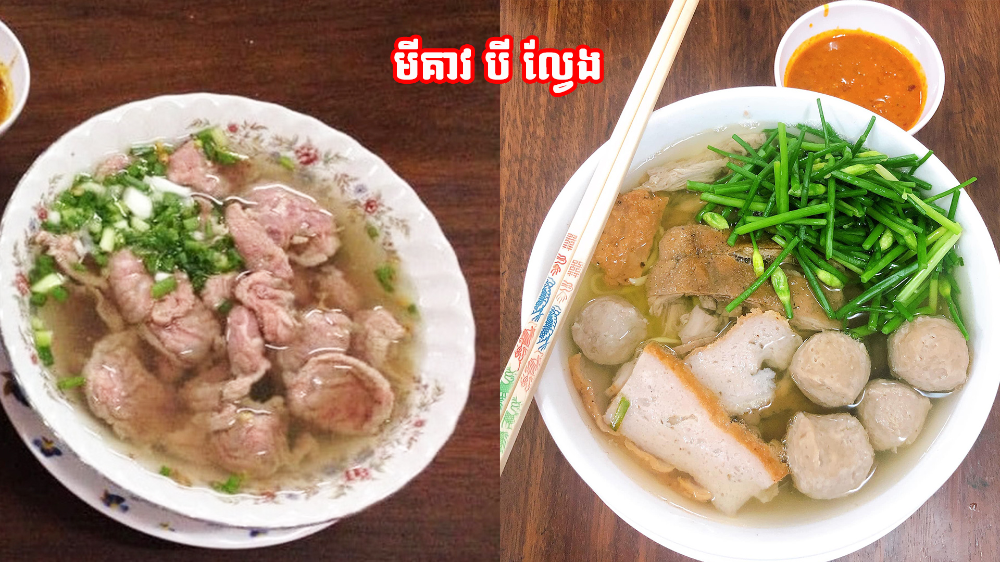
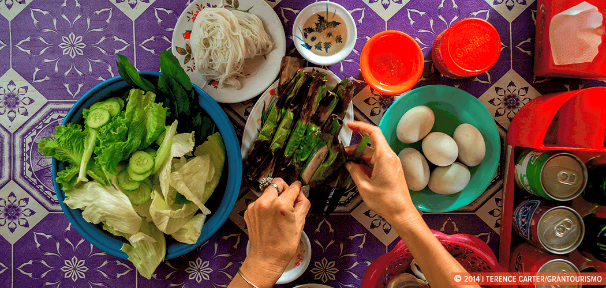
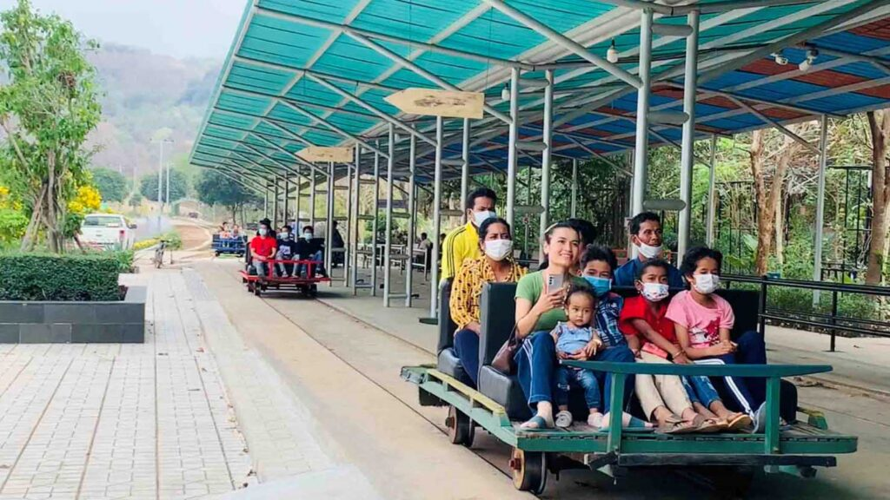
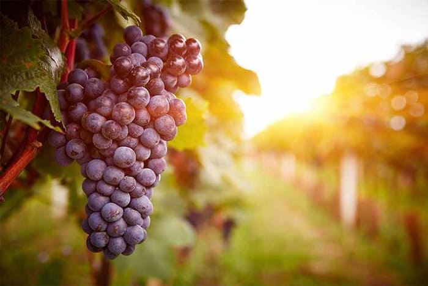
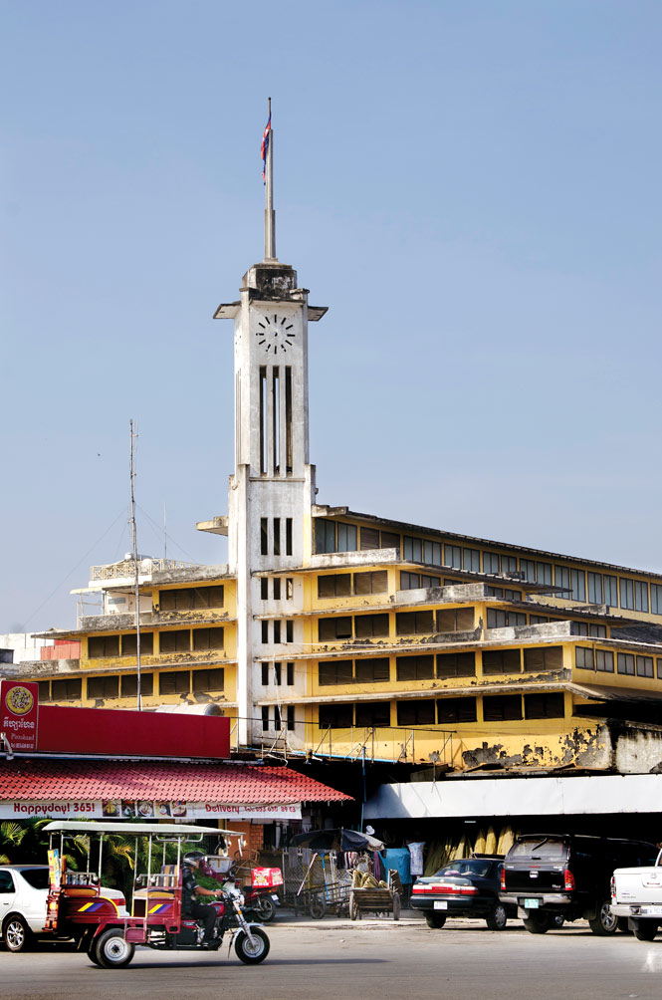
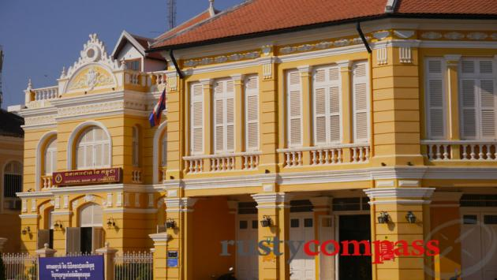

FOOD

មីគាវ (Mi Keav) is a regular morning food for Battambangers. It is popular among the people in the city.

សង្វាក់ ពងទាកូន (Fishcake and Baby duck egg) is also a popular one among the people here.
TOURSIM ATTARCTIONS

The Bamboo train is the most popular nowadays among the olds and the young ones. It is located at Banon Mountain. Most people from the local or the tourists go here alot.

The grape farm is also a very popular place for tourism as many people come here to see the farm and get a taste of the grape wine.
ARCHITECTURE
One of the best thing about Battambang is the architecture left by the France colony

